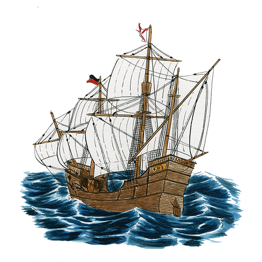

<!doctype HTML>
<html>
<!-- vendor -->
<script src="https://aframe.io/releases/0.9.2/aframe.min.js"></script>
<script src="https://rawgit.com/donmccurdy/aframe-extras/master/dist/aframe-extras.loaders.min.js"></script>
<script src="https://raw.githack.com/jeromeetienne/AR.js/2.0.8/aframe/build/aframe-ar.js"></script>
<!-- custom -->
<link rel="stylesheet" href="el.css">
<script src="components.js"></script>

<body style='margin : 0px; overflow: hidden;'>
    <!-- hasta el momento se agregan P a el hud -->
    <div id="hud" style='position: absolute; top: 10px; left: 5px; text-align: center; z-index: 1;'>
    </div>
    <!-- para usar un marker con el borde mas pequeño hay que hacerlo en el maker. pero tambien hay que ponerlo en el arjs=""
    tendria que ser arjs="patternRatio: 0.75" para un marker 75% dibujo 25% borde , por default: 0.5-->
    <a-scene embedded renderer="precision: mediump" arjs='sourceType: webcam; detectionMode: mono_and_matrix; matrixCodeType: 3x3; debugUIEnabled: false; patternRatio: 0.75;'>
        <a-assets>
            <!-- 
            
            
            
            
            
            
            
             -->

            
            <a-mixin id="marker" fade-in lookat popup></a-mixin>
            <a-mixin id="barco" olas></a-mixin>
            <a-mixin id="fotos" scale="2 2 2" rotation="-90 0 0" ></a-mixin>
            
        

        </a-assets>

 
        <a-marker type="pattern" url='patt/aonikenk-1.patt' id='1' mixin="marker">
            <a-plane material="src: img/aonikenk/caza-de-nandu.png" mixin="fotos"></a-plane>
        </a-marker>  

 
        <a-marker type="pattern" url='patt/aonikenk-2.patt' id='2' mixin="marker">
            <a-plane material="src: img/aonikenk/kau.png" mixin="fotos"></a-plane>
        </a-marker>

 
        <a-marker type="pattern" url='patt/kawesqar-1.patt' id='3' mixin="marker">
            <a-plane material="src: img/kawesqar/asechando-a-los-lobos.png" mixin="fotos"></a-plane>
        </a-marker>

 
        <a-marker type="pattern" url='patt/kawesqar-2.patt' id='4' mixin="marker">
            <a-plane material="src: img/kawesqar/familia-kawesqar-en-canoa.png" mixin="fotos"></a-plane>
        </a-marker>

 
        <a-marker type="pattern" url='patt/selknam-1.patt' id='5' mixin="marker">
            <a-plane material="src: img/selknam/caravana-de-mujeres-y-ninos-selknam.png" mixin="fotos"></a-plane>
        </a-marker>

 
        <a-marker type="pattern" url='patt/selknam-2.patt' id='6' mixin="marker">
            <a-plane material="src: img/selknam/caza-del-guanaco.png" mixin="fotos"></a-plane>
        </a-marker>

 
        <a-marker type="pattern" url='patt/yagan-1.patt' id='7' mixin="marker">
            <a-plane material="src: img/yagan/caza-del-lobo-con-ampon-grande.png" mixin="fotos"></a-plane>
        </a-marker>

 
        <a-marker type="pattern" url='patt/yagan-2.patt' id='8' mixin="marker">
            <a-plane material="src: img/yagan/familia-yagan-choza.png" mixin="fotos"></a-plane>
        </a-marker>

 
        <a-marker type="pattern" url='patt/barco-1.patt' id='9' mixin="marker barco">
            <a-plane material="src: img/barco/barco.png" mixin="fotos"></a-plane>
        </a-marker>

 
        <a-marker type="pattern" url='patt/barco-2.patt' id='10' mixin="marker barco">
            <a-plane material="src: img/barco/barco.png" mixin="fotos"></a-plane>
        </a-marker>

 
        <a-marker type="pattern" url='patt/barco-3.patt' id='11' mixin="marker barco">
            <a-plane material="src: img/barco/barco.png" mixin="fotos"></a-plane>
        </a-marker>

 
        <a-marker type="pattern" url='patt/barco-4.patt' id='12' mixin="marker barco">
            <a-plane material="src: img/barco/barco.png" mixin="fotos"></a-plane>
        </a-marker>
        
        <a-entity camera></a-entity>
    </a-scene>
</body>

</html>